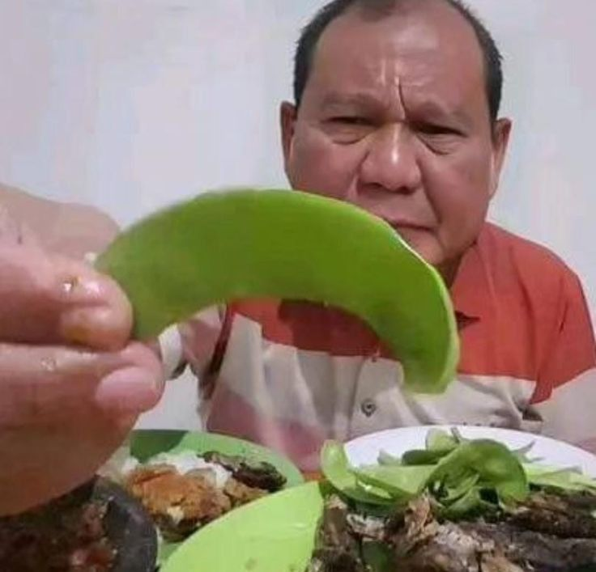

Daftarkan usaha
Penyedia mencatat identitas dan informasi dasar usahanya .
sisaBaik

selamatkan makanan, pulinkan hilainya
SisaBaik mempertemukan penyedia yang memiliki stok makanan layak konsumsi dengan pembeli atau penerima yang membutuhkannya .
Alur sederhana ini akan dikembangkan menjadi proses aplikasi penuh pada chapter berikutnya .
Penyedia mencatat identitas dan informasi dasar usahanya .
Penyedia menjelaskan makanan berlebih yang masih layak konsumsi .
Pengguna memilih penawaran dan mengambilnya sesuai ketentuan .
Membantu memulihkan sebagian nilai stok, menjangkau pengguna baru, and mencatat kontribusi pengurangan limbah pangan.
Membuka akses terhadap makanan layak konsumsi dengan harga lebih terjangkau atau melalui penyaluran.
Mengurangi makanan yang terbuang dan mendorong praktik konsumsi yang lebih bertanggung jawab.
Seluruh data berikut bersifat fiktif untuk keperluan pembelajaran .
Penyedia: Toko Roti Contoh
Jumlah tersedia: 8 paket
Harga: Rp25.000 Rp10.000
Batas pengambilan:
sisabaik hanya ditujukan untuk makanan yang masih layak konsumsi. Penyedia bertanggung jawab memberikan informasi kondisi, alergen, penyimpanan, dan batas waktu pengambilan secara jujur.